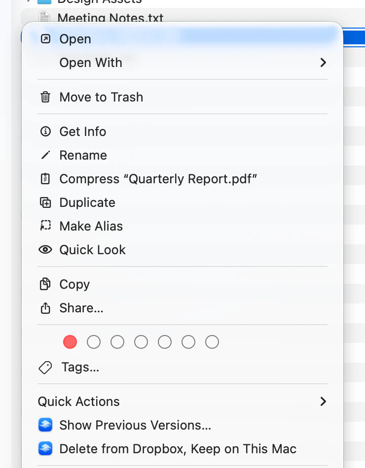

Dropbox bewahrt frühere Versionen einer Datei eine Zeit lang auf, nachdem du sie geändert hast. Wenn du etwas gesichert hast, das du nicht sichern wolltest, oder eine App eine Datei fehlerhaft überschrieben hat, kannst du eine frühere Version wiederherstellen, ohne den Finder zu verlassen.
Klicke im Finder bei gedrückter Taste „ctrl“ auf die Datei.
Wähle „Show Previous Versions…“.

Jede Version ist mit dem Datum aufgeführt, das Dropbox festgehalten hat, und mit der damaligen Größe der Datei, die neueste zuerst. Die Version, die dein Mac gerade hat, ist als Aktuell markiert.

Hinweis: Der Befehl wird nur angeboten, wenn genau ein Objekt ausgewählt ist, und nur für eine Datei — nicht für einen Ordner, nicht für zwei Dateien auf einmal und nicht für ein Objekt, dessen Synchronisierung du beendet hast. Bei jeder anderen Auswahl fehlt er im Menü einfach.
Wähle die gewünschte Version aus. Die neueste Version, die nicht die aktuelle ist, ist beim Öffnen des Fensters bereits ausgewählt.
Klicke auf „Wiederherstellen …“ und bestätige mit einem Klick auf „Wiederherstellen“.
Die Datei wird auf den Stand dieser Version zurückgesetzt, in Dropbox und auf jedem Gerät, das beim selben Account angemeldet ist. Der Finder zieht einen Moment später nach, sobald die Änderung zurückgekommen ist.
Hinweis: Das ist das Einzige hier, was du nicht rückgängig machen kannst, indem du es noch einmal tust: Der jetzige Inhalt der Datei wird ersetzt. Die ersetzte Version wird selbst als frühere Version aufbewahrt, sodass du auf demselben Weg zu ihr zurückkehren kannst.
Bei einer Datei, von der Dropbox keine frühere Version hat — einer, die du seit dem Hinzufügen nie geändert hast —, steht Dropbox hat keine frühere Version dieser Datei aufbewahrt., und die Taste unten heißt „Schließen“ statt „Abbrechen“.
Versionen bleiben einer Datei auch beim Umbenennen und Verschieben erhalten. Eine Datei, die du umbenannt hast, zeigt also weiterhin, wie sie vorher war.
Hinweis: Das Fenster zeigt höchstens zehn Versionen,
und es gibt keine Möglichkeit, darüber hinaus zu blättern. Wie weit zurück Dropbox Versionen
aufbewahrt, hängt von deinem Dropbox-Tarif ab, aber eine Datei, die oft genug gesichert wird, hat
alle zehn schon innerhalb eines Tages aufgebraucht. zephyr revs reicht weiter zurück
— siehe Das Befehlszeilenprogramm „zephyr“ installieren.